Galería de Actividades
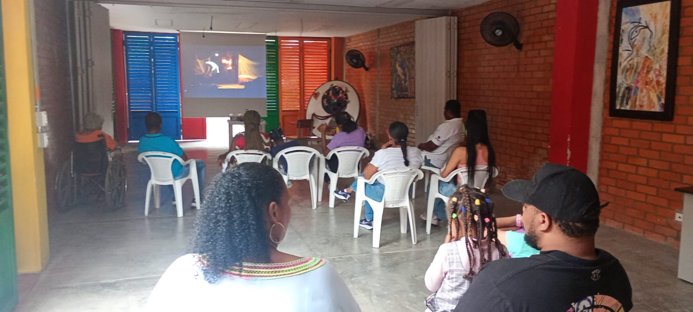
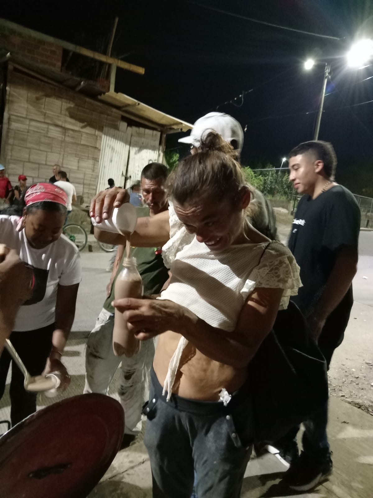
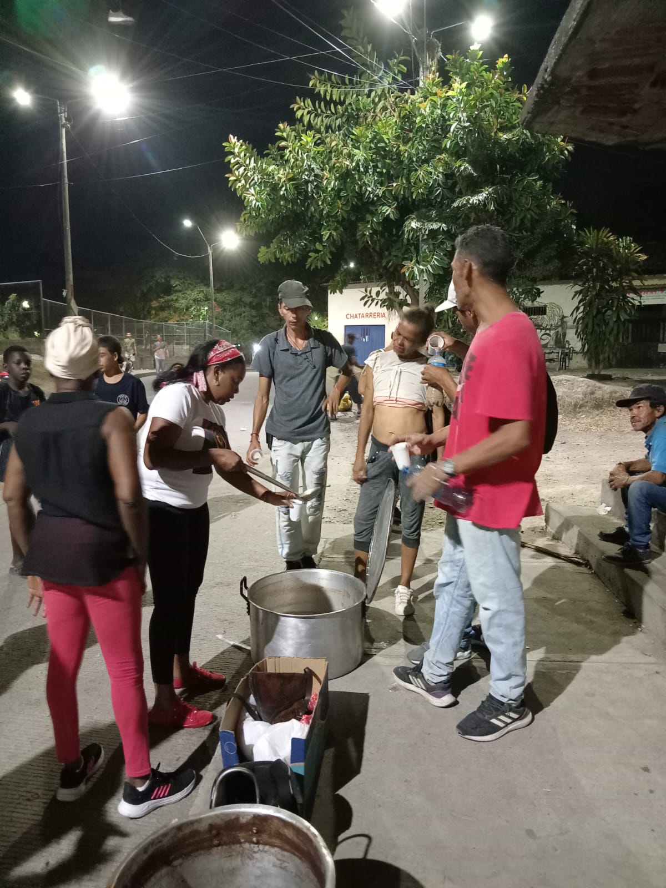
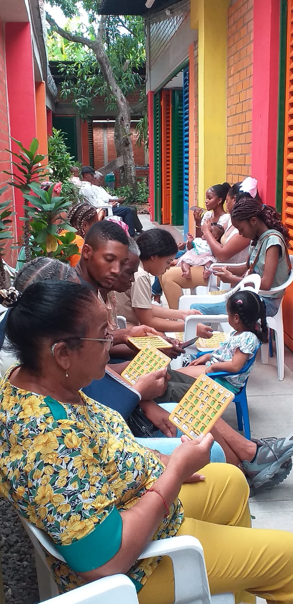
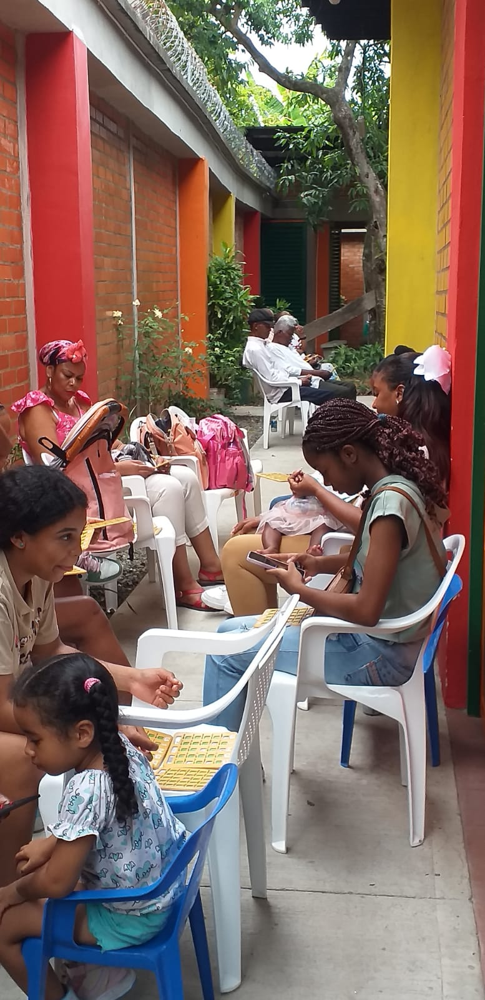

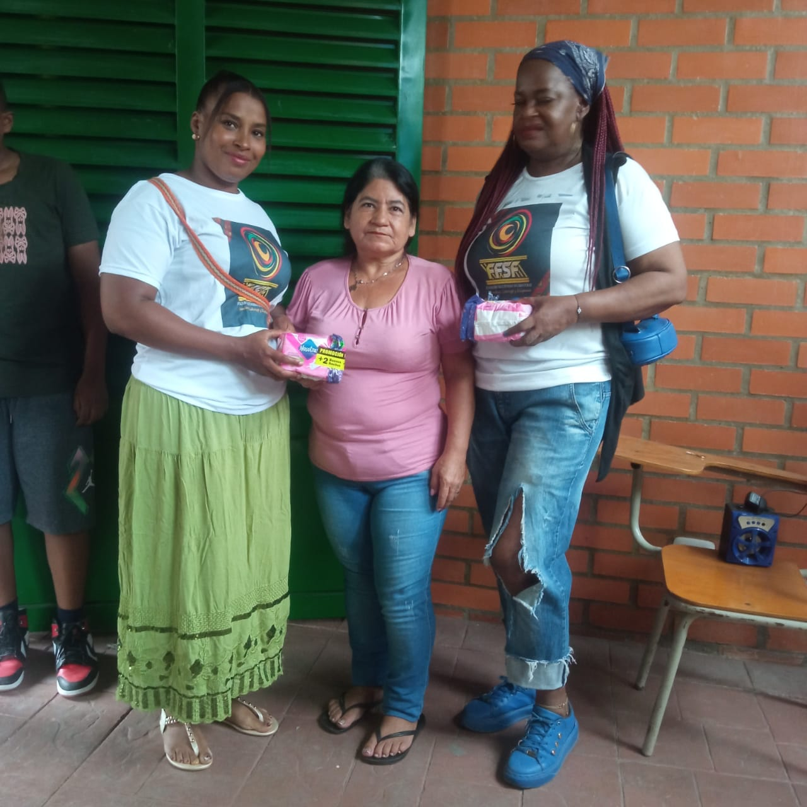
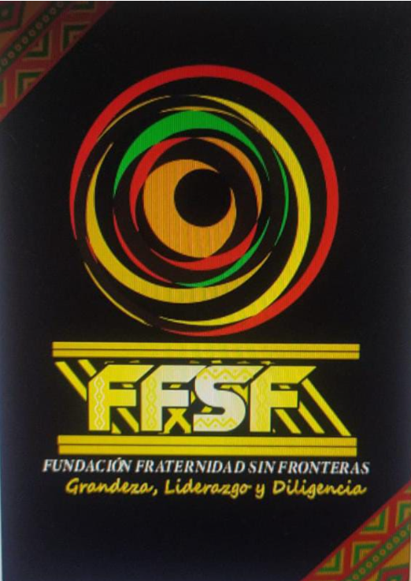
Cargando...
La Fundación Fraternidad Sin Fronteras trabaja por la paz territorial, la equidad y el fortalecimiento de la identidad afrodescendiente y campesina. Con cada proyecto construimos fraternidad y oportunidades que cruzan fronteras sembrando esperanza en los territorios más vulnerables.
Construyendo oportunidades, fortaleciendo comunidades y promoviendo la identidad afrodescendiente desde el territorio.
La Fundación Fraternidad Sin Fronteras es una organización social comprometida con el fortalecimiento del tejido comunitario, la defensa de los derechos humanos y la promoción de la identidad afrodescendiente en Colombia.
Trabajamos junto a mujeres, jóvenes y familias impulsando procesos educativos, culturales y de desarrollo sostenible que generan oportunidades y transforman comunidades.
Conoce nuestros programas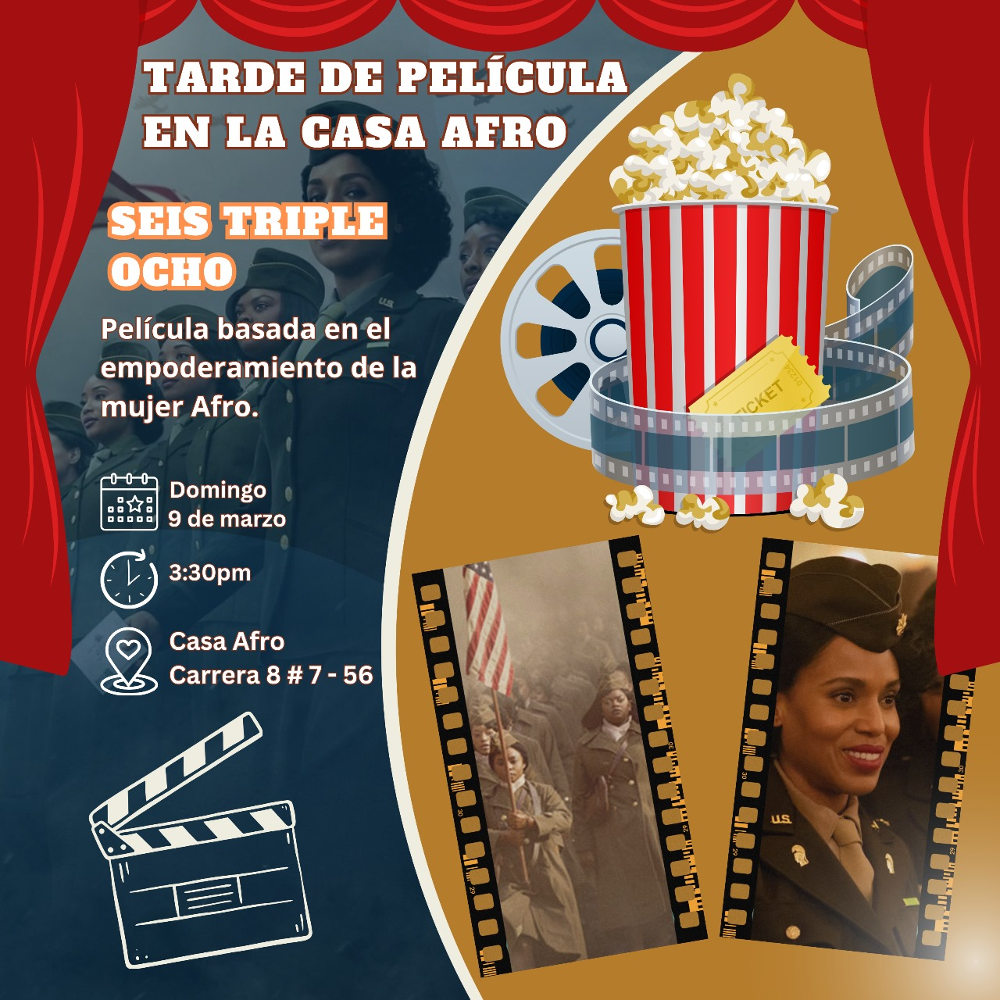
Promover el bienestar, la igualdad y el reconocimiento de los derechos de la comunidad afrodescendiente de Cartago y la región, mediante la formación, el emprendimiento, la gestión social y la preservación de la cultura.
Ser una organización referente en el Valle del Cauca por su trabajo en pro de la equidad étnica, la justicia social y la difusión de la identidad afrocolombiana.
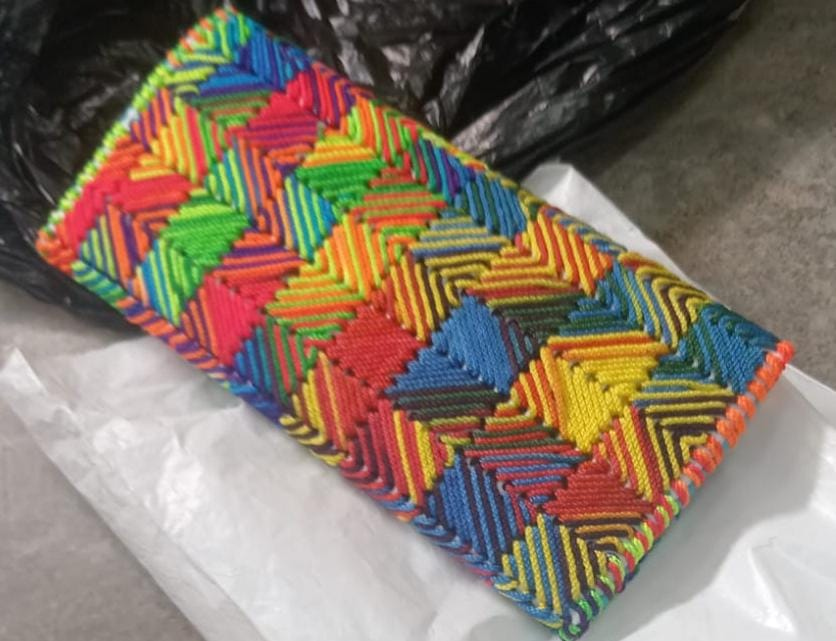
Fortalecemos el emprendimiento y la economía familiar mediante procesos de formación artesanal.
Espacios culturales para niños, jóvenes y familias mediante jornadas de cine comunitario.
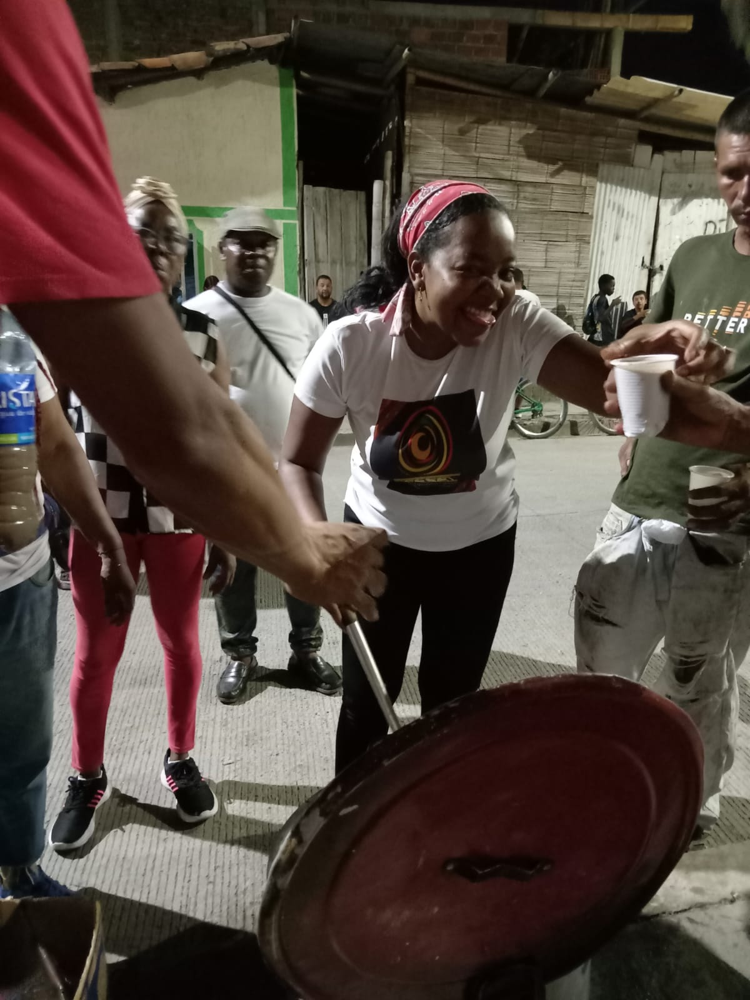
Compartimos alimentos y esperanza con habitantes de calle y personas en condición de vulnerabilidad.
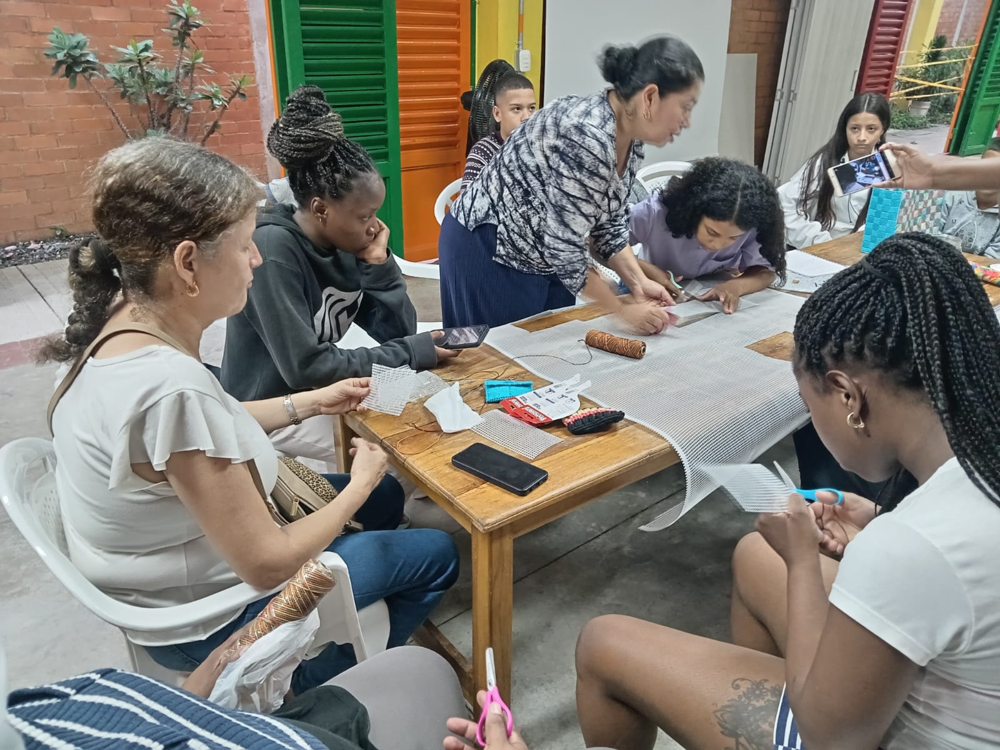
Desarrollamos talleres educativos y espacios de aprendizaje para fortalecer las capacidades de mujeres, jóvenes y comunidades.
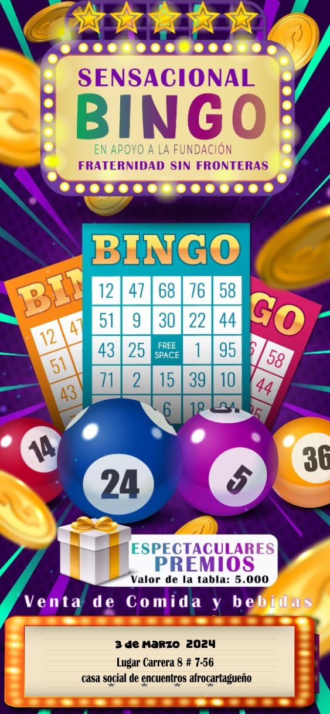
Actividades comunitarias para fortalecer la integración, recaudar fondos y apoyar nuestros proyectos sociales.






Personas beneficiadas
Actividades realizadas
Programas sociales
Compromiso con la comunidad
Gracias al apoyo de instituciones, organizaciones y personas solidarias, seguimos construyendo oportunidades para nuestras comunidades.
Cada aporte nos ayuda a seguir transformando vidas y construyendo oportunidades para niños, jóvenes, mujeres y comunidades vulnerables.
Con tu apoyo fortalecemos nuestros programas sociales.
Banco: Banco Agrario de Colombia
Cuenta de Ahorros: 4-697-83-00423-0
Titular: Fundación Fraternidad Sin Fronteras
NIT: 900345711-4
Cada aporte fortalece nuestros programas sociales, educativos, culturales y comunitarios, beneficiando a niños, jóvenes, mujeres y familias en situación de vulnerabilidad. Tu solidaridad transforma vidas.
Transversal 5B #15-68
Cartago, Valle del Cauca
Lunes a Viernes
8:00 a.m. - 5:00 p.m.
Cada aporte, cada voluntario y cada aliado nos ayuda a construir un futuro con más oportunidades para nuestras comunidades.